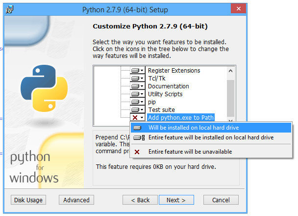

Introduksjon
Dette dokumentet vil forklare hvordan man kan setter opp alt som skal til for å kunne lage egne mods og plugins til Minecraft ved hjelp av Python. For å ta i bruk dette anbefaler vi sterk at brukeren kan endel Python og har erfaring med Minecraft.
Disse oppgavene er basert på en tutorial som er hentet herfra: Python coding for Minecraft
Steg 1: Installer Forge for Minecraft
- For å ta i bruk Forge må vi først ha installert Minecraft. Dette gjøres ved å laste ned Minecraft.
- Viktig nå at du kjører Minecraft 1.8 en gang før du installerer Forge. Etter å ha kjørt Minecraft 1.8, lukk Minecraft og Minecraft Launcher.
- Last ned Forge 1.8: Forge
- Installer Forge med standard instillinger.
- Start Minecraft og velg Forge-profilen som skal ha dukket opp.
Steg 2: Installere Python
- Hvis du ikke har Python 3, så kan du laste det ned her: Python
- Når du installerer Python er det viktig at du trykker på
Customize Pythonog huker avAdd python to Path, dersom du har Windows. 
Steg 3: Installer mod og skript
- Lag en mappe i Minecraft-mappen som heter
mods. For Windows: TrykkWindows + Rog skriv%appdata%\.minecraftog press enter. For Mac OS X: Mappen ligger iLiberary - Application Support - minecraft. Dersom du ikke finner denne anbefaler jeg å bruke terminalen ved hjelp av commandoenecd mappenavnfor å flytte deg rundt til forskjellige mapper ogmkdir modsfor å lage en mappe som heter mods. - Last ned
RaspberryJam-Mod.jarogpython3-scripts.zipfra Github - Legg
RaspberryJam-Mod.jarimodsmappen du lagde i forrige steg og unzippython3-scripts.ziptil minecraft-mappen (ikke mods). Denne zip-filen inneholder en mappe som hetermcpipy.

Steg 4: Prøv en mod
- Start Minecraft.
- Velg
Forgeprofilen. - Lag en ny verden, anbefales å gjøre dette i
Creative ModemedSuperflat. - Trykk på
Tfor å åpne kommandolinjen. - Skriv inn
/python donutfor å tegne en stor og fin Donut av gann og glass.
Dersom du får feilmeldinger som Script not found, så betyr dette at mcpipy-mappen ikke ligger der den skal. Den skal ligge i minecraft-mappen.
Dersom du får feilmeldingen Cannot run program "python" må du legge til Python til Path. Anbefaler å google dette.
Da er alt satt opp! I neste oppgave skal vi se på hvordan vi kan lange linjer og figurer i Minecraft sitt 3D-rom før vi skal bygget vårt helt eget hus i Minecraft!